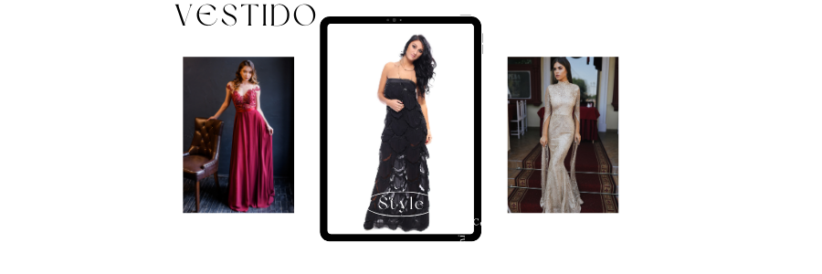
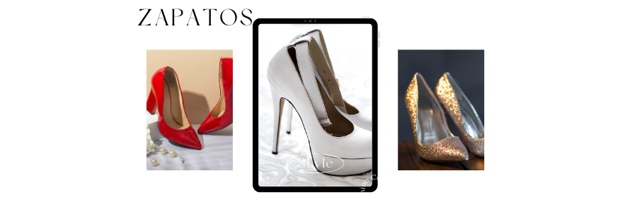
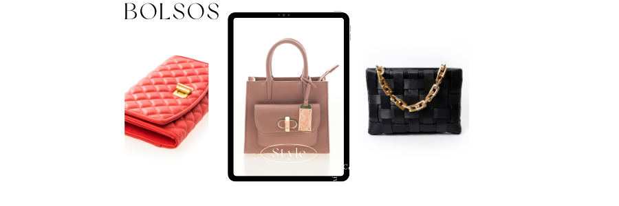

Vestido
Los vestidos siempre marcan una prenda importante en el momento de un evento en las mujeres esto representa una vista a su momento especial de alli que quieran llamar la atención en su ajuste perfecto a su cuerpo.
Zapatos
No podemos ignorar que el complemento perfecto es la prenda que mas tienen las damas en su hogar ellos figuran armonia y estilo en la combinacion con su vestido.
Bolso
Como complemento un buen bolso en el cual se pueda cargar un sencillo maquillaje para un pequeño pero perecto retoque en el momento indicaoo. Este debe ser elegante, en ocasiones brillante y que llame la atención y haga juego con las dos prendas anteriormente mencionadas